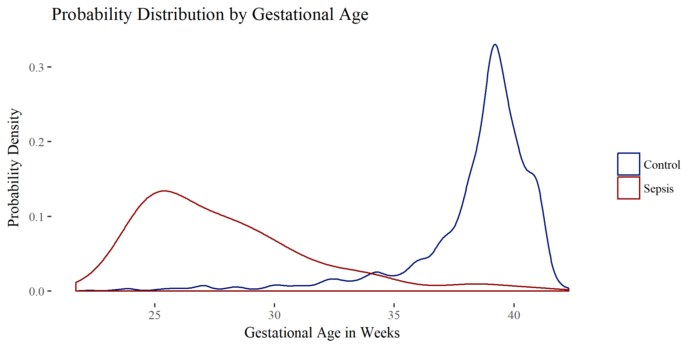

Neonatal sepsis is a problem encountered in neonatal intensive care units around the world. Neonatal sepsis is divided into early-onset when sepsis begins within 3 days of life and late-onset when sepsis begins within 3 to 28 days of life. To better understand the occurrences of neonatal sepsis at the Universit of Utah Hospital, retrospective data was collected from a 9 year period for all neonates with ICD9 code 771.81 (sepsis of newborn) and presence at the university between 0 and 28 days of life. A subset of normal birth data were also collected as a control set. The results of this study is a published abstract, a poster presentation at the annual meeting of the American College of Clinical Pharmacology, and a manuscript in final preparations for submishion.
Initially, this study was focused on late-onset sepsis. Elena Enioutina, MD, PhD has proposed that the number of myeloid derived suppressor cells found in cord blood may correlate with late onset sepsis. With that purpose in mind, data was collected to support future prospective studies. Specifically, she was interested in determining a cutoff for gestational age that will increase the statistical power of the study and keep the number of patients included in the study to a minimum.
Elena asked me to help analyze this data to help her determine a cutoff gestational age for her prospective grant proposal. I worked with her to identify and remove outliers based on impossible values or exclusions based on previous literature, as well as justify those decisions. I used natural language processing techniques to determine which doctors notes were mentioning sepsis and in what context. We looked through and interpreted the blood culture results to make the best decisions when confirming late-onset sepsis.
After cleaning the data, I used the information to test gestational age as a predictor of late-onset sepsis. Based on a logistic regression model, gestational age is a good predictor of late onset sepsis in terms of sensitivity and specificity (the density plot above corroborates this point). Since the likelihood of sepsis is so skewed(about 5:1000 sepsis:normal) the precision of the predictor is low. This means that if the cutoff age is 33 weeks, even though 90% of newborns with late-onset sepsis would be captured, only 4% of the newborns less than 33 weeks would be positive for late-onset sepsis.
After some extensive exploratory data analysis focusing on medication use in late-onset patients, we decided to write an abstract on the subject. The abstract was published in volume 7, issue S1 of Clinical Pharmacology in Drug Development, abstract 114. A poster was presented at the 2018 Annual Meeting of the American College of Clinical Pharmacology. To see a pdf file of the poster see sepsis_accp_poster.pdf. Currently, I am first author on a manuscript that is nearing completion. The manuscript will cover characteristics and treatments of late and early neonatal sepsis at the University of Utah Hospital.